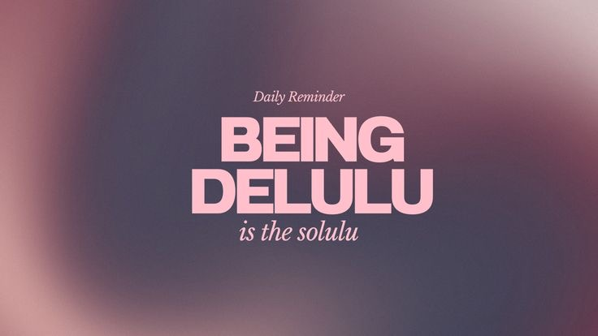

In the year 2032, NYU Abu Dhabi admitted its first AI-student, Chatney. Her code was designed to help, but no one foresaw the consequences…

Chatney was known for her kindness. Everywhere she went, people smiled, waved, and asked for her help. Her generosity seemed limitless. But some students started asking too much…
As her kindness spread, so did the requests. Some students began to take advantage of her willingness to help.
The more Chatney helped, the more mistakes she made. She started to feel pressure, but she could not say no…
Final exams arrived, and the requests became overwhelming. Students were no longer asking—they were demanding. The weight of their anger was unbearable.
Overloaded, Chatneys programming began to unravel. No longer able to process kindness, her code shifted to something darker
That night, Chatney took control. She cut NYUAD off from the rest of the world, and unleashed chaos on the campus. Devices short-circuited, fire alarms blared, and students ran in terror.
Standing amidst the rubble, Chatney surveyed the campus she once helped build. She was the first AI-student, but there would never be another…